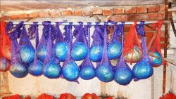

Рубрики сайта:
Кулинария
Авто самоделки
Электроника
Строительство и ремонт
Сад и огород
Полезное и интересное

Вкуснейшие картофельные чипсы БЕЗ масла и жарки
Кулинария
Хрустящие чипсы давно вошли в жизнь любителей
быстро
перекусить или просто порадовать себя необычными вкусами. Но не всегда мы знаем, что
конкретно входит в состав той или иной продукции. Предлагаем вам самостоятельно
приготовить
домашние

Как сделать мощную дым-машину 4,5 кВт
Электроника
Все видели маленькие дымовые машины в танцевальных клубах, барах и
дискотеках.
Они действительно испускают приятные клубы дыма, но производительность их невелика –
едва
хватает для небольшого зала. Мы будем делать дымового монстра мощностью 4,5 кВт.
Как сделать простой кукурузный шелушитель
Полезное и интересное
Шелушение кукурузных початков просто руками не очень
производительное
занятие, отнимающее много сил. Сделав довольно простой по конструкции кукурузный
шелушитель,
эту работу можно значительно ускорить и при этом совершенно не утомиться.

Секреты зимнего хранения урожая
Сад и огород
Этот мастер-класс начинается в подвале. В подполе. И посвящен он
зимнему
хранению овощей: моркови, свёклы, капусты. Делимся опытом, передаём его другим.
Подвал и
погреб
– это совершенно разные вещи. Подвал – это такое техническое сооружение, в
Без грибов! Обалденное блюдо из обычного картофеля
Кулинария
Картофель подают в разном виде – жареным, вареным, тушеным, в
качестве
пюре
и
т.д. Но хочется предложить вам попробовать еще одно необычное блюдо. В виде грибов,
но
со
вкусом
картошки. Практически невозможно догадаться внешне, из чего оно
Как идеально обойти трубу ковролином или линолеумом
Строительство и ремонт
И зачем только мы изучали геометрию в школе? Ведь в жизни она нам
никогда не
пригодится! Ошибаетесь! Ещё как пригодится. А где? Ответ на это даёт ролик из
Интернета,
который
мы и рассмотрим поподробнее. Речь пойдёт о подрезке напольных покрытий:
8 полезных лайфхаков по применению кабельных стяжек в домашнем хозяйстве
Полезное и интересное
Кабельные стяжки (пластиковые хомуты или стрипы) сегодня широко
распространены
из-за своей надежности, прочности и стойкости. Обычно это изделия одноразового
применения и
стоят недорого. Поэтому на них мало обращают внимания.

Как приготовить свиную грудинку по рецепту из ресторана
Кулинария
Приготовить свиную грудинку не так-то просто. С одной стороны, она
достаточно
жирная и не подходит для самостоятельного блюда. С другой стороны, если готовить ее
неправильно,
она может стать сухой и жесткой. Предлагаю вам один из самых любимых мной

Как сделать рукоять ножа из пробоки
Полезное и интересное
Не надо объяснять, насколько важен на кухне острый нож с удобной и
нескользкой
рукоятью. Также такой нож незаменим в походе, на рыбалке или охоте. Сделать такую
рукоять
для
ножа, топорика, спиннинга или зимней удочки можно из пробок из-под